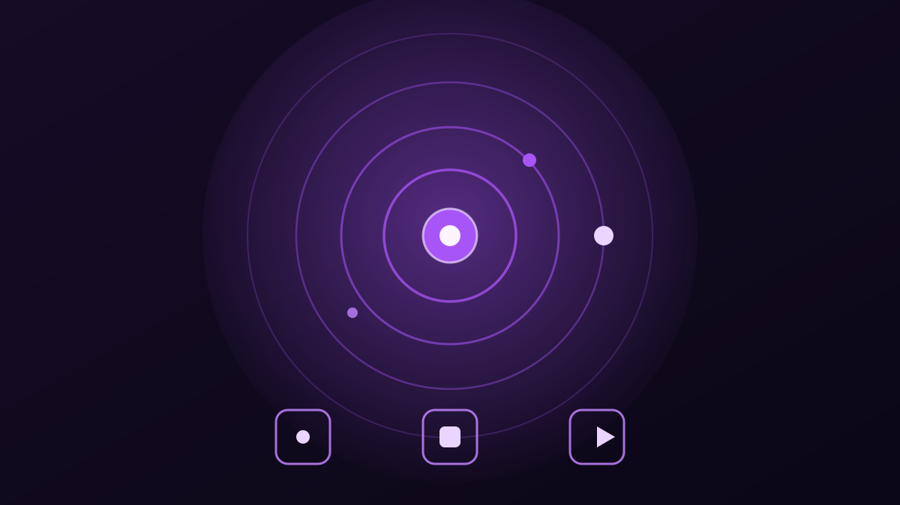
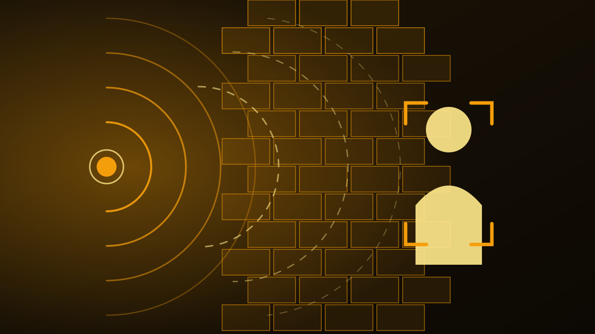
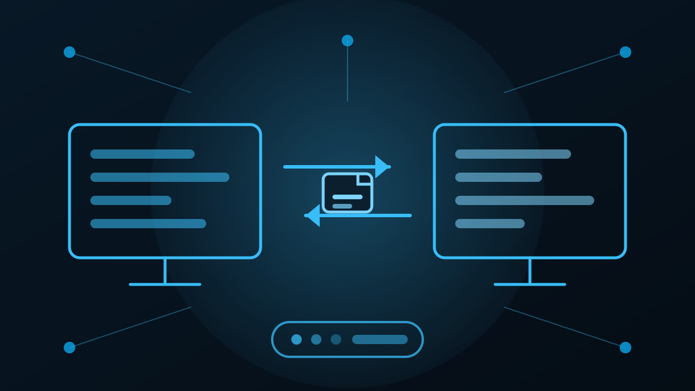
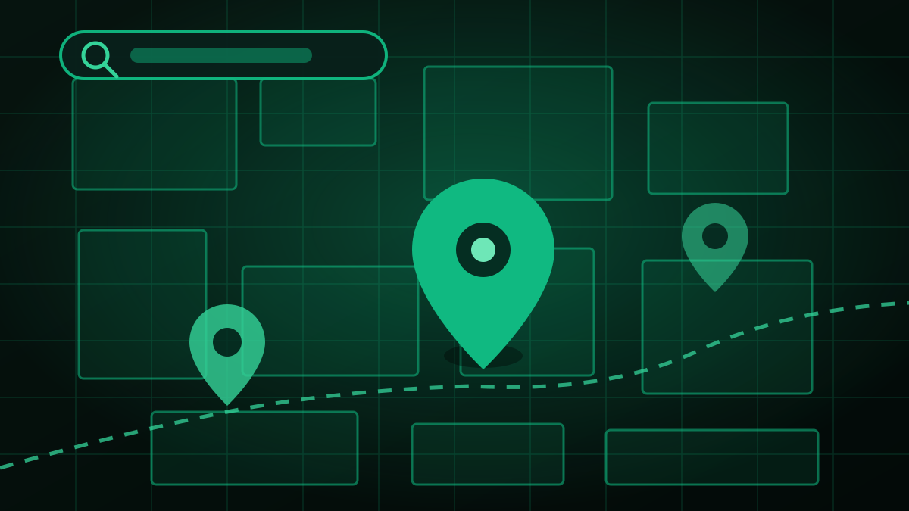
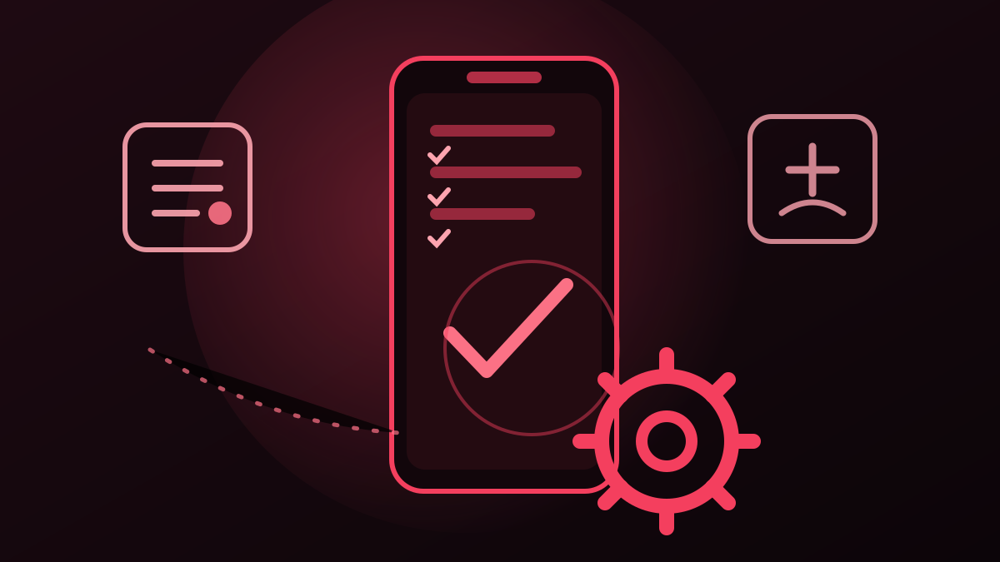

Günlük işleri kolaylaştıran araçlar yapmayı seviyorum: LAN üzerinde
dosya gönderen bir program, haritada ilan numarasını gösteren bir panel,
bilgisayarı yöneten bir yapay zekâ asistanı… Hepsi aynı meraktan doğuyor.
Bir sorunu çözerken önce neden bozulduğunu anlamaya çalışırım, sonra
sonucu sade bir arayüze indirgerim. Kullanıcının teknik bilgisi olmasa
bile işini bitirebilsin isterim.
Projeler

Yapay ZekâAI Agent · Masaüstü
Jarvis — Kişisel Yapay Zekâ Asistanı
Kendi yazdığım, ajan gibi çalışan kişisel asistan. Bilgisayara erişimi
var; verdiğin işi kendi adımlarını planlayarak tamamlar.
Bilgisayara erişip gerçek işleri yapan ajan mimarisi
Adımları kendi planlar, araçları kullanır, sonucu raporlar
Sohbetle komut ver, geri kalanını o halleder
AI AgentLLMOtomasyon
Bir işi tek cümlede tarif edersin; Jarvis bunu uygulanabilir adımlara böler, sırayla yürütür ve sonda ne yaptığını özetler.
Kendi adım planını kurar, araçları sırayla kullanır
Bir adım tutmazsa geri dönüp başka yolu dener
Sonda ne yapıldığını kısa bir raporla verir

Yapay Zekâ + DonanımESP32 · Edge AI
ESP32 ile Duvar Arkası Görme ve Konum Tahmini
ESP32 üzerine kurulu yapay zekâ projesi. Duvarın arkasındaki kişiyi
tespit edip yerini tahmin ediyor.
Donanım üzerinde çalışan hafif model (edge AI)
Duvar arkasındaki kişiyi tespit eder
Tespit edilen kişinin konumunu tahmin eder
ESP32Edge AIGörsel işleme
Amaç engel arkasında ne olduğunu anlamak: sensör verisi modelden geçer, kişinin yaklaşık konumu işaretle gösterilir.
Sensör verisi → model → konum çıktısı
Ağır hesap buluta değil, cihazın kendisine düşer
Duvar gibi katı engellerin arkası da algılanır

MasaüstüWindows · Yerel ağ
Kerkük Üniversitesi — LAN Haberleşme & Dosya Aktarımı
Kurum içindeki çalışanların aynı yerel ağ üzerinden birbirine mesaj
yazabildiği ve dosya gönderebildiği masaüstü uygulaması.
Ağdaki kullanıcıları otomatik bulma ve mesajlaşma
Büyük dosyaları yerel ağ üzerinden hızla gönderme
İnternet çıkışı ve sunucu kurulumu gerektirmez
SocketNode.jsWindows
Kurum içindeki bilgisayarlar birbirini kendiliğinden bulur; mesaj ve dosya, sunucu ya da internet kurmadan doğrudan akar.
Ağdaki kullanıcılar otomatik listelenir
Dosyalar yerel ağ hızında gider, yükleme beklenmez
Sunucu kurulumu ve internet çıkışı gerekmez

WebHarita · PHP · MySQL
Emlak Haritası — Parsel & İlan Numaraları
Emlakçılar için harita üzerinde ilan ve parsel numaralarını görmeyi
sağlayan web uygulaması.
Harita üzerinde numaralı işaretçiler ve tıklanabilir detay
Bölge, numara ve özelliğe göre arama ve filtreleme
Veritabanından yönetilen ilan kayıtları
LeafletOpenStreetMapGoogle Maps API
Emlakçı ilan numarasını müşteriye anlatmak zorunda kalmaz: haritada gösterir, tıklayınca kayıt bilgisi açılır.
İlan ve parsel numaraları aynı ekranda görünür
Bölge ve numara aramasıyla kayıt saniyeler içinde bulunur
Kayıtlar veritabanından yönetilir, tek tek düzenlenmez

AndroidKotlin · Jetpack Compose
AA Fix — Xiaomi Android Auto Sorun Giderici
MIUI/HyperOS telefonlarda Android Auto çökmesi ve bağlanamaması
sorunlarını tespit eden, kullanıcıyı doğru ayara yönlendiren uygulama.
Teşhis sihirbazı: 8+ kontrol, tek dokunuşla ayar ekranı
Adım adım çözüm rehberi ve ADB komut listesi
Rootsuz, izin sadık, tamamen Türkçe
KotlinComposeIntent
Uygulama önce sorunu kendisi arar: kontrolleri sırayla yapar, hangi ayarın eksik olduğunu söyler ve o ayarın ekranına götürür.
Teşhis → neden → çözüm sırasıyla ilerler
Her adımda tek dokunuşla doğru ayar ekranı açılır
Gerekli ADB komutları kopyalanabilir şekilde listelenir